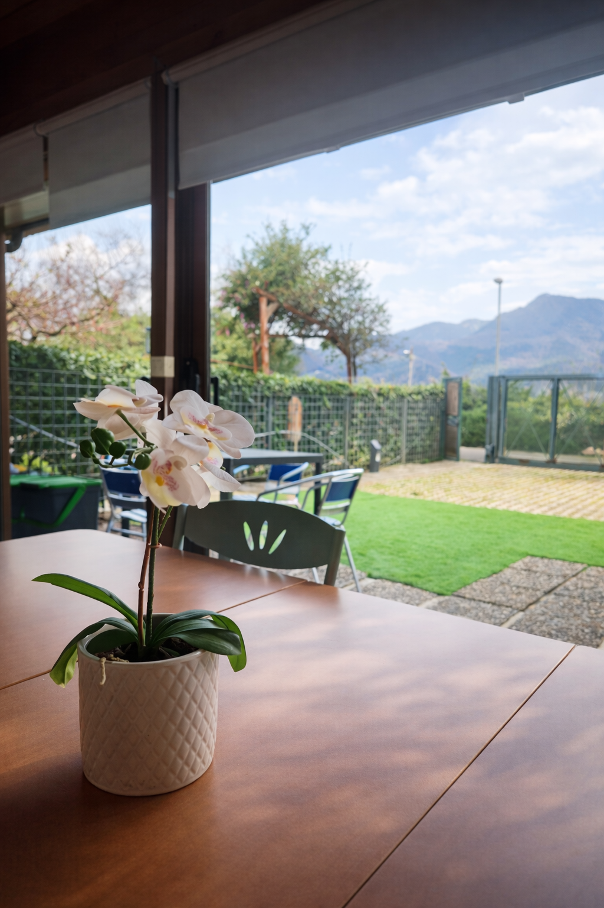
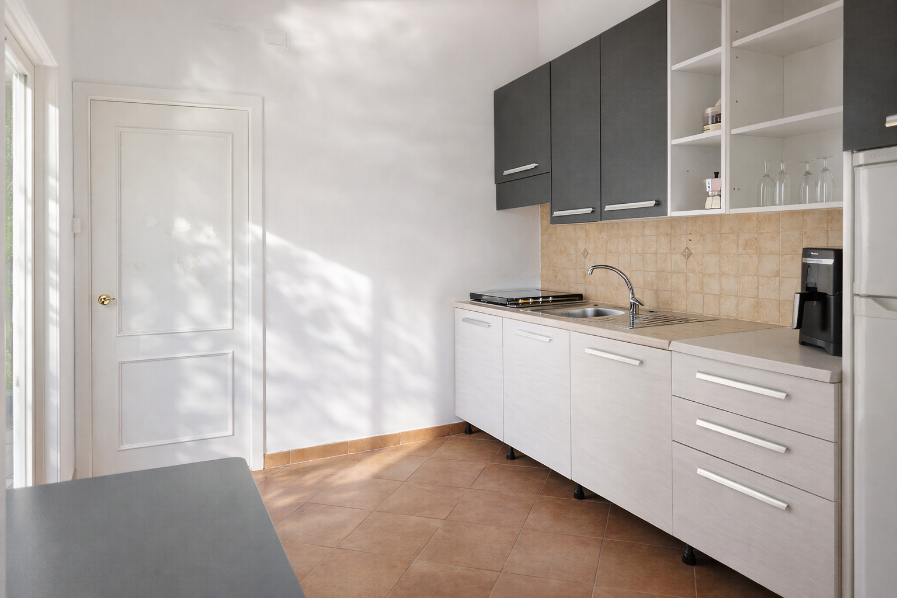

Benvenuti
Siamo felici di ospitarvi ad A Casa di Marco. Qui trovate tutte le informazioni utili per il soggiorno.





Check-in / Check-out
Wi‑Fi
I dati di accesso al Wi‑Fi sono disponibili direttamente in casa, sulla bacheca informativa.
Regole della casa
- Non sono consentite feste o eventi non autorizzati.
- Rispettare gli orari di silenzio nelle ore serali e notturne.
- È vietato fumare all'interno. All'esterno usare sempre un posacenere.
- Prima di uscire, spegnere luci, climatizzatore e dispositivi elettrici.
- Non lasciare finestre o porte aperte quando non siete in casa.
- A fine soggiorno lasciare la cucina in ordine e non lasciare cibo deperibile.
- Segnalate subito eventuali danni o problemi: li risolveremo il prima possibile.
Termostato e climatizzatore
Rifiuti e raccolta differenziata
A fine soggiorno la spazzatura va buttata nei bidoni condominiali. Vi chiediamo di rispettare la raccolta differenziata.

Colazione
La colazione è disponibile presso Brignan Cafè, bar convenzionato con A Casa di Marco.
Vedi esempi dal menù
Bevande: caffè espresso, cappuccino, latte macchiato, tè, camomilla, tisane, succhi. Snack: cornetti vari gusti, cornetto vegano, danese alle mandorle.
Parcheggio
È possibile parcheggiare nel giardino della casa oppure fuori sulla strada, prima della curva per entrare.

Dove fare la spesa
Qui troverete supermercati, minimarket e negozi utili vicino alla casa. Aggiorneremo questa sezione con i nostri consigli.
Trasporti e navette
Da A Casa di Marco potete raggiungere facilmente il centro di Salerno, la Costiera Amalfitana e le principali stazioni.
Vedi orari
Scrivici su WhatsApp
Google Maps
Orario feriale – Linea 14

Orario festivo – Linea B

Cosa vedere
Una selezione di luoghi che consigliamo di visitare partendo da A Casa di Marco.
Google Maps
Google Maps
Dove mangiare
I nostri consigli per mangiare bene in zona Salerno e dintorni.
Google Maps